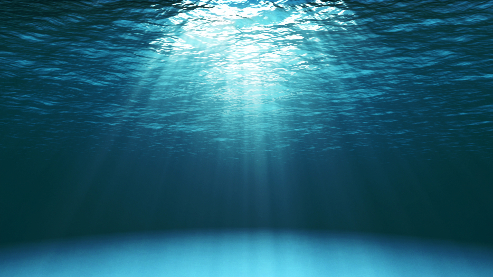
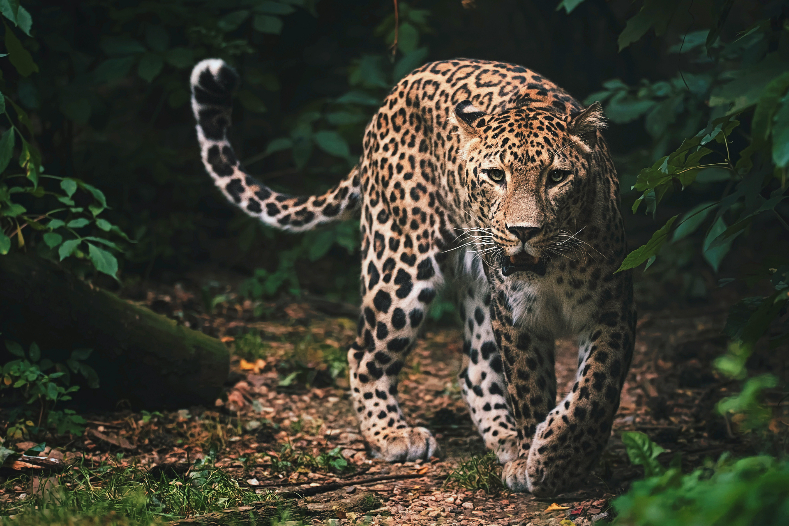
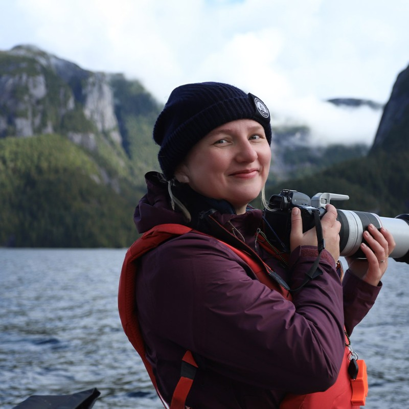
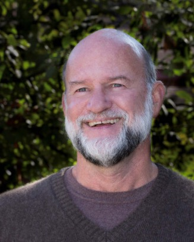

Who We Are
Wavelength brings together expertise in neuroscience, behavioral ecology, computational mathematics, and animal behavior. Our founders and advisors span expertise in field research, data science, and community-engaged science.
We partner with a global network of collaborator labs, field sites, and community partners that make this work possible. Together, we're building the tools and science needed for innovation and welfare.

Our Mission
We integrate global datasets and advanced data science to understand animal communication, grounding our work in what matters to animal welfare and engaging communities.
Our Vision
We envision a world where understanding animal voices drives compassionate action that centers welfare, guides conservation, and deepens our connection to the natural world around us.

What We Do
Interpret
Logan James
Understand animal communication signals through targeted field research and cross-species global datasets. We decode meaning from sound across birds, frogs, whales, and beyond.
Innovate
Lee Wall
Develop evidence-based technologies for health and welfare, using animal signals as indicators for early warning systems of disaster, disease, and distress.
Engage
Erin Wall
Partner with the public through creative outreach, community science, and open-source tools — making animal communication science accessible to everyone.
Our Team

Erin Wall
Co-Founder, CEO · Research Lead: Engage
PhD Neuroscience. Expertise in field & lab operations, science communication, behavioral neuroscience and ecology. Research on humpback whale song development and perception & preference in female songbirds.
Awards: Explorers Club Fjallraven Field Grant, Mitacs Elevate Fellowship, and more. Brings deep expertise in translating complex research for public audiences.
Logan James
Co-Founder · Research Lead: Interpret
PhD Biology, BSc Biology, minor in Linguistics. Expertise in comparative bioacoustics, statistics, and data visualization. Projects in vocal learning and communication across birds, frogs, bats, and humans.
Awards: Smithsonian Postdoctoral Fellowship, Earth Species Project, AAAS Mass Media Fellow. Leads cross-species acoustic analysis and global dataset curation.
Lee Wall
Co-Founder · Research Lead: Innovate
BSc Applied & Computational Mathematics with minors in Physics and Computer Science. Expertise in quantitative ecology, bio-math modeling, biosecurity, and AI safety & ethics.
Awards: AI x Bio Research Fellowship, FutureKind, Open Philanthropy. Develops the computational tools and models that power Wavelength's innovation pipeline.

Mike Ryan
Senior Advisor
Clark Hubbs Regents Professor of Zoology at UT Austin and Senior Research Associate at the Smithsonian Tropical Research Institute. Described as the world's leading authority in animal behavior.
Awards: Distinguished Animal Behaviorist Lifetime Achievement, E.O. Wilson Naturalist Award. Over four decades studying animal communication and mate choice.